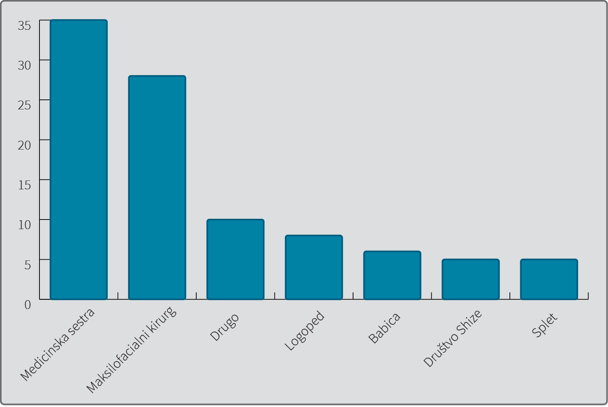

Motnje hranjenja in požiranja pri otrocih z razcepi v orofacialnem področju
Feeding and swallowing disorders in children with clefts in the orofacial region
Izvleček
Abstract
1 Uvod
Orofacialni razcep je najpogostejša prirojena obrazna nepravilnost. V Sloveniji se rodi približno 1,77 posameznikov z razcepom v orofacialnem področju na 1.000 živorojenih otrok (1). Večina orofacialnih razcepov nastane kot kombinacija genetskih in zunanjih faktorjev in se razvije v zgodnji fazi nosečnosti (2).
Orofacialne razcepe delimo v štiri skupine. V prvo skupino sodi razcep ustnice (
Razcep v orofacialnem področju lahko v veliki meri vpliva na izgled, govor, sluh ter rast in razvoj obraza, ne nazadnje pa tudi psiho-socialno in ekonomsko prizadene otroka in njegovo družino ter s tem močno zniža kakovost življenja (2,6).
Hranjenje je osnovna funkcija človeka. Hranjenje in požiranje zajema celoten akt od sprejema hrane v usta do oblikovanja grižljaja in potovanja grižljaja prek žrela v požiralnik in želodec (7).
Številne študije so pokazale, da imajo otroci z orofacialnimi razcepi težave s hranjenjem različnih razsežnosti, vendar si strokovnjaki niso enotni glede simptomatike težav. Lahko prihaja do davljenja, kašlja, požiranja zraka in podaljšanega časa hranjenja, s tem pa tudi do neustreznega pridobivanja na teži, dehidracije in potrebe po nadomestnem načinu hranjenja (8,9). Najpogosteje opisana težava pri hranjenju novorojenčkov z razcepom neba je oralna motorična disfunkcija in zahajanje hrane skozi nos ter nizka učinkovitost pri hranjenju. Največ tveganja za nastanek težav s hranjenjem obstaja pri otrocih z Robinovo sekvenco (10).
De Vries in sodelavci (8) so s pomočjo vprašalnikov za starše (90 udeležencev) ugotavljali pogostost težav s hranjenjem pri osebah s CP. Kar 67 % v študijo zajetih otrok z CP je kazalo visoko tveganje za nastanek težav s hranjenjem. Pogosto je bilo potrebno uvesti hranjenje prek nazogastrične sonde (v 32 %). Jones (11) je navajal težave s hranjenjem pri 25 % otrok z različnimi orofacialnimi razcepi, Spriestersbach s sodelavci (12) pa je ugotovil, da je imelo kar 73 % otrok z izoliranim CP težave s hranjenjem. Reid in sodelavci (13) so preiskovali veščine hranjenja pri dojenčkih s shizo in poskušali prepoznati dejavnike tveganja. Ugotovili so, da ima 32 % novorojenčkov z orofacialnimi razcepi šibke veščine hranjenja, prevalenca se pri treh mesecih starosti zniža na 19 % in pri 14 mesecih na 15 %. Le redki novorojenčki z določenimi orofacialnimi razcepi se lahko hranijo z dojenjem. De Vries in sodelavc (8) so zabeležili, da 86 % mater otrok z razcepi neba ni nikoli poskusilo dojiti. Trenouth in Campbell (14) sta ugotovili, da so samo pri novorojenčkih z izoliranim CL uspeli vzdrževati ustrezno telesno težo le z dojenjem.
Reid in sodelavci (15) so raziskovali, kakšno je sesanje novorojenčkov, rojenih z orofacialnimi razcepi. Ugotovili so, da so otroci z izoliranim CL izkazovali podobno sesanje kot vrstniki, pri novorojenčkih s CP s CL ali brez pa so zaznali spremenjen vzorec sesanja.
Strokovnjaki opozarjajo, da je hranjenje potrebno obravnavati povsem drugače, kadar gre za orofacialni razcep v okviru kraniofacialnega sindroma. Takrat poleg prizadetih obraznih struktur na hranjenje vpliva še vrsta drugih strukturnih, dihalnih in živčno-mišičnih posebnosti otroka (16,17).
Pomembno je vedeti, da je zdravljenje otrok z orofacialnimi razcepi dolgotrajno in zapleteno, vanj so od otrokovega rojstva naprej vključeni različni specialisti, ki se redno sestajajo, skupaj načrtujejo zdravljenje najbolj zahtevnih otrok z orofacialnimi razcepi, vrednotijo svoje delo, iščejo vzroke za neuspehe, jih skušajo pojasniti in odpravljati (18). Člani tima ugotavljajo nastale motnje, sami obravnavajo otroka z orofacialnim razcepom ali ga napotijo k drugim ožje usmerjenim strokovnjakom v bližini otrokovega doma (19,20).
Doslej v Sloveniji še ni bilo študije, ki bi sistematično raziskovala probleme hranjenja in požiranja pri otrocih z orofacialnimi razcepi in njihovo reševanje.
2 Metode
Preiskovana populacija so bili predšolski otroci z razcepom v orofacialnem področju, stari od 6 mesecev do 6 let. Za namen raziskave smo na podlagi podatkov iz literature (17,21) oblikovali anonimni vprašalnik. Vprašanja so bila vezana na splošne informacije o otroku, podatke o njegovem hranjenju in požiranju, uporabljenih pripomočkih za hranjenje, spremljajočih težavah poleg hranjenja (občutljivost pri sprejemanju dotikov v ustih in umivanju zob, težave pri razvoju govora, stres staršev ob hranjenju), ter podatke o podpori in pomoči strokovnih delavcev pri hranjenju otroka z orofacialnim razcepom.
Vprašalnik smo najprej pilotno preizkusili z 19 starši, ki so pripeljali svoje otroke z orofacialnimi razcepi na kontrolni pregled k maksilofacialnemu kirurgu, nato pa ga razposlali vsem staršem otrok z orofacialnimi razcepi, rojenih v treh zaporednih letih, od 1. 1. 2013 do 31. 12. 2016. Vprašalnik je bil anonimen, le s pripisanim imenom otroka in podpisanim dovoljenjem staršev smo lahko povzeli medicinske podatke otrok iz zdravstvene dokumentacije in z njimi dopolnili rezultate vprašalnika (gestacijska starost ob rojstvu in tip orofacialnega razcepa).
Rezultate smo analizirali s programom Excel 2013 in IBM SPSS Statistics 22.0. Predstavili smo jih z opisno statistiko, nato pa primerjali rezultate vprašalnika med skupino otrok z orofacialnimi razcepi, ki so imeli težave s hranjenjem in požiranjem, in skupino otrok, za katere so starši navedli, da težav s hranjenjem niso imeli. Uporabili smo test hi-kvadrat oziroma Fisherjev natančni test.
Raziskavo je odobrila Komisija za medicinsko etiko Republike Slovenije (odločba št. 0120–107/2017).
3 Rezultati
Odziv na poslani vprašalnik je bil 47 %, od 93 poslanih vprašalnikov smo jih dobili vrnjenih 44. V končno analizo je bilo skupaj vključenih 58 vprašalnikov, poleg 44 vrnjenih še 14 popolnoma izpolnjenih vprašalnikov iz pilotske raziskave, in sicer tistih, ki so jih izpolnjevali starši otrok, starih 6 let in manj. Končno skupino so tako sestavljali otroci, ki so bili stari med šest in 72 mesecev (srednja vrednost 30 mesecev, standardni odklon 16,8 mesecev). Udeležence raziskave smo razdelili v skupine glede na vrsto orofacialnega razcepa (Tabela 1).
|
Vrsta |
Moški (%) |
Ženske (%) |
Skupaj (%) |
|
UCL |
3 (5,2) |
2 (3,4) |
5 (8,6) |
|
UCLA |
1 (1,7) |
2 (3,4) |
3 (5,2) |
|
BCLA |
1 (1,7) |
2 (3,4) |
3 (5,2) |
|
CP |
11 (19,0) |
13 (22,4) |
24 (41,4) |
|
UCLP |
9 (15,5) |
7 (12,1) |
16 (27,6) |
|
BCLP |
6 (10,3) |
1 (1,7) |
7 (12,1) |
|
Skupaj |
31 (53,4) |
27 (46,6) |
58 (100,0) |
Legenda: UCL – enostranski razcep ustnice, UCLA – enostranski razcep ustnice in čeljustnega grebena, BCLA – obojestranski razcep ustnice in čeljustnega grebena, CP – razcep neba, UCLP – enostranski razcep ustnice, čeljustnega grebena in neba, BCLP – obojestranski razcep ustnice, čeljustnega grebena in neba.
Skupaj 53 (91,4 %) otrok, vključenih v raziskavo, je bilo rojenih po dopolnjenem 37. tednu gestacijske starosti. Pri desetih otrocih (17,2 %) se je shiza pojavila v sklopu sindroma: pri 6 otrocih v sklopu Robinove sekvence, pri 2 v sklopu van der Woudovega sindroma, 1 je imel orofaciodigitalni sindrom, 1 pa je imel poleg orofacialnega razcepa še Downov sindrom.
Težave s hranjenjem je v nekem obdobju svojega življenja imelo 42 (72,4 %) otrok. Mesec dni po rojstvu so težave vztrajale še pri 24 (40,4 %), do zaključenega kirurškega zdravljenja pa je težave imelo 14 otrok (24,1 %), pri 8 (13,8 %) pa so bile težave ves čas prisotne. Med temi 8 otroki so imeli trije CP, štirje UCLP, eden pa bilateralno CL. Dva sta imela orofacialni razcep, ki je bil del sindroma (Robinova sekvenca, sindrom van der Woude).
Enajst otrok je bilo dojenih vsaj en mesec, med njimi je bilo osem otrok s CL z razcepom čeljustnega grebena ali brez in 3 otroci s CP (eden od teh je imel submukozni razcep neba, eden pa nepopoln razcep mehkega neba).
Po nazogastrični sondi je bilo neko obdobje hranjenih 6 otrok z orofacialnim razcepom. Povprečen čas hranjenja po nazogastrični sondi je bil 3,2 meseca, vsem otrokom so sondo vstavili v prvem mesecu življenja. Od otrok, hranjenih po sondi, so imeli trije CP, trije pa UCLP. Pri štirih je bil CLP prisoten v sklopu sindroma. Dva sta imela Robinovo sekvenco, eden sindrom van der Woude in eden orofaciodigitalni sindrom. Po gastrostomi je bil hranjen le en otrok in sicer od 8. do 16. meseca starosti, pred tem je imel vstavljeno nazogastrično sondo. Poleg CP je imel tudi Robinovo sekvenco, bil je dvojček in nedonošenček.
V Tabeli 2 so prikazane težave s hranjenjem in požiranjem otrok z orofacialnimi razcepi po pogostosti:
Poleg izraženih težav s hranjenjem je 20 otrok z orofacialnimi razcepi slabo prenašalo dotike v ustih, 14 otrok pa je imelo težave pri umivanju zob. Trije od šestih otrok, ki so bili hranjeni po nazogastrični sondi, so imeli tudi težave s sprejemanjem dotikov v ustih, med otroki brez uporabe sonde pa je bilo takih le tretjina. Izmed 14 otrok, ki so imeli težave z grizenjem in žvečenjem, jih je 9 slabo prenašalo dotike v ustih, 2 sta bila neko obdobje hranjena po nazogastrični cevki, 1 od teh 2 je bil nato še 8 mesecev hranjen po gastrostomi.
V našem vzorcu je imelo po mnenju staršev 24 otrok težave pri govoru, od tega 11 otrok s CP, 13 pa s CLP. Pri 8 otrocih se je govor razvijal normalno, brez pomoči logopeda. Med njimi jih je imelo pet CL ali CLA, trije CP in dva UCLP. 24 otrok je bilo premladih, da bi starši lahko presojali prisotnosti težav pri govoru.
Uporaba prilagojene stekleničke je pomagala k zmanjševanju težav s hranjenjem pri 35 otrocih (81,4 % tistih, ki so prilagojeno stekleničko uporabljali). Po pričetku uporabe nebne ploščice so starši 19 otrok (75 % tistih, ki so nebno ploščico uporabljali) opazili, da so se tudi težave s hranjenjem zmanjšale.
Več kot tretjina staršev (20 oseb) je v nekem obdobju hranjenje svojega otroka doživljala kot stres.
Slika 1 prikazuje, kateri strokovnjaki so staršem svetovali glede hranjenja in požiranja.

Samo 15 (25,9 %) staršev je že pred rojstvom vedelo, da se jim bo rodil otrok z orofacialnim razcepom. Vsi so imeli razcepljeno vsaj ustnico in čeljustni greben. Med njimi ni bilo otrok samo s CL in otrok samo s CP.
Dobri dve tretjini (41 staršev) bi se želelo udeležiti izobraževanja na temo hranjenja in požiranja že pred rojstvom ali takoj po rojstvu otroka z orofacialnim razcepom.
Pri primerjavi otrok z orofacialnimi razcepi, ki so imeli težave s hranjenjem v nekem obdobju življenja, in otrok brez težav, smo ugotovili statistično pomembno razliko med skupinama glede vrste orofacialnega razcepa, prisotnosti sindroma, kasnejših težav v govoru in starševskega doživljaja stresa ob hranjenju otroka. Mejno značilno je bilo tudi pridobivanje ne telesni teži (Tabela 3). Zaradi majhnega števila otrok, ki so imeli ves čas prisotne težave s hranjenjem, smo rezultate primerjave teh otrok z ostalimi prikazali samo z opisno statistiko (Tabela 4).
|
Težave s hranjenjem (v nekem obdobju življenja) |
p |
||
|
DA N = 42 |
NE N = 16 |
||
|
CL / CLA (N = 11) |
3 |
8 |
0,001 |
|
CP / CLP (N = 47) |
39 |
3 |
0,001 |
|
Prisotnost sindroma (N = 10) |
10 |
0 |
0,048 |
|
Težave v govoru (N = 24) |
20 |
4 |
0,034 |
|
Nazogastrično hranjenje (N = 6) |
6 |
0 |
0,173 |
|
Neustrezno pridobivanje na teži (N = 9) |
9 |
0 |
0,051 |
|
Slabo prenašanje dotikov v ustih (N = 20) |
16 |
4 |
0,371 |
|
Starši doživljajo stres ob hranjenju (N = 20) |
18 |
2 |
0,032 |
Legenda: CL – razcep ustnice, CLA – razcep ustnice in čeljustnega grebena, CP – razcep neba, CLP – razcep ustnice, čeljustnega grebena in neba.
|
Težave s hranjenjem |
||
|
DA N = 8 |
NE N = 50 |
|
|
CL / CLA (N = 11) |
1 |
10 |
|
CP / CLP (N = 47) |
7 |
40 |
|
Prisotnost sindroma (N = 10) |
2 |
8 |
|
Težave v govoru (N = 24) |
2 |
22 |
|
Nazogastrično hranjenje (N = 6) |
3 |
3 |
|
Neustrezno pridobivanje na teži (N = 9) |
2 |
7 |
|
Slabo prenašanje dotikov v ustih (N = 20) |
4 |
16 |
|
Starši doživljajoe stres ob hranjenju (N = 20) |
6 |
14 |
Legenda: CL – razcep ustnice, CLA – razcep ustnice in čeljustnega grebena, CP – razcep neba, CLP – razcep ustnice, čeljustnega grebena in neba.
4 Razpravljanje
Glede na to, da se v Sloveniji na leto rodi med 30 in 40 otrok z orofacialnimi razcepi (1), smo v naš vzorec zajeli še dokaj velik delež otrok (58 oseb), starih med 6 mesecev in 6 let. Za pošiljanje vprašalnika otrokom, ki so bili v času raziskave stari od 6 mesecev do 3 let, smo se odločili, ker smo želeli dobiti predvsem podatke o začetnih težavah s hranjenjem. V pilotnem delu raziskave za evalvacijo vprašalnika smo zajeli otroke, ki so zaporedoma prihajali na kontrolni pregled k maksilofacialnemu kirurgu. V analizo smo nato vključili samo predšolske otroke, saj s podaljševanjem obdobja od rojstva otroka do izpolnjevanja vprašalnika nekatere težave lahko staršem zbledijo iz spomina.
Reid in sodelavci (13) so raziskovali pogostost težav s hranjenjem pri otrocih z orofacialnimi razcepi in ugotovili, da se težave s starostjo otroka zmanjšujejo in se pogostost težav s hranjenjem do 14. meseca zmanjša na 15 %. Rezultati naše raziskave so pokazali, da je imelo v prvem mesecu življenja slabe tri četrtine otrok težave s hranjenjem, pri 24 % so težave vztrajale do zaključenega kirurškega zdravljenja. To pomeni, da se je največ težav s hranjenjem pojavljalo pri poskusu dojenja ali pri hranjenju po steklenički v prvih mesecih življenja, le v manjšem številu primerov so težave vztrajale kasneje pri uvajanju goste in formirane hrane. Tudi Jones s sodelavci (11) in Reid (10) so ugotovili podobno. Podatkov o pogostosti težav s požiranjem pri otroški populaciji na splošno ni veliko. Iz ZDA poročajo, da je v letu 2012 približno 1 % otroške populacije v državi imel težave pri požiranju, vendar jih je le približno 13 % poiskalo ustrezno strokovno pomoč (22). Podatkov za Slovenijo ni, vendar pa je ob primerjavi pogostosti disfagije v ameriški raziskavi med splošno otroško populacijo ter rezultatov naše raziskave jasno, da so težave s hranjenjem pomemben problem otrok z orofacialnimi razcepi tudi še po zaključenem kirurškem zdravljenju. Le dva od osmih otrok (13,8 %), ki so imeli težave s hranjenjem po končanem kirurškem zdravljenju, sta imela sindrom. Težave s požiranjem torej najverjetneje niso samo posledica drugačnih anatomskih razmer (orofacialnega razcepa), ampak tudi drugih dejavnikov.
Peterson-Falzone ugotavlja, da ima velik delež otrok z orofacialnimi razcepi v zgodnjem obdobju težave z vzpostavitvijo normalnega vzorca hranjenja, največ težav nastane zaradi komunikacije med ustno in nosno votlino. Posledica tega je nezmožnost ustvarjanja negativnega tlaka v ustni votlini. S tem se zmožnost sesanja zmanjša (3). Najpogostejša težava v naši raziskavi je bila ravno zahajanje hrane v nos, poleg tega pa še požiranje zraka pri hranjenju po steklenički, zaspanost med hranjenjem po steklenički, podaljšan čas obroka, zahajanje hrane iz ust ob uporabi stekleničke ter težave z grizenjem in žvečenjem. Večina težav je bila torej posledica komunikacije med ustno in nosno votlino. Podobno so ugotovili tudi drugi avtorji (8,13,21). Zaspanost med hranjenjem bi lahko pripisovali večji porabi energije otroka ob neuspešnem sesanju ter zato hitrejšo utrujenostjo ob hranjenju. Kasnejše težave z grizenjem in žvečenjem bi lahko vsaj delno razložili s spremenjeno senzibiliteto v ustni votlini zaradi orofacialnega razcepa in posledic zdravljenja, saj je devet od 14 otrok, ki so imeli vsaj neko obdobje težave z grizenjem in žvečenjem, slabo prenašalo dotike v ustih.
McDonald je v svoji raziskavi ugotovila, da vrsta orofacialnega razcepa pomembno vpliva na dojenje, saj se je 60 % otrok s CL dojilo več kot 6 mesecev, medtem ko so bili le redki otroci s CP dojeni več kot 6 mesecev (21). V naši raziskavi je bilo dojenih samo enajst otrok z orofacialnim razcepi (19 %), med njimi le trije z CP, kar se ujema s podatki strokovne literature (21,14).
Ugotovili smo, da vrsta orofacialnega razcepa statistično pomembno vpliva na težave s hranjenjem in požiranjem, saj imajo otroci s CL ali CLA bistveno manj težav kot otroci s CP ali CLP (Tabela 3). Ta rezultat je logična posledica anatomskih razmer, ki obstajajo do zaključenega kirurškega zdravljenja, redkokdaj tudi še kasneje. Otroci s težavami pri hranjenju v nekem obdobju življenja so glede na podatke iz literature pričakovano pogosteje neustrezno pridobivali na teži, bili hranjeni po nazogastrični sondi in imeli poleg orofacialnega razcepa tudi sindrom (Tabela 3).
Pri 3 od 6 otrok, ki so bili hranjeni po nazogastrični sondi, so starši opisovali slabo prenašanje dotikov v ustni votlini. Ti otroci so najverjetneje razvili čezmerno občutljivost zaradi pomanjkanja izkušenj v zgodnji starosti, ko se živčne povezave med periferijo in centralnim živčevjem še vzpostavljajo in zorijo.
Le pri 8 otrocih so težave s hranjenjem vztrajale še po kirurškem zdravljenju. Ta skupina otrok se je tudi pogosto hranila na nadomesten način (3/8), starši 6 otrok so ob hranjenju doživljali stres. Poleg možnih neoptimalnih anatomskih razmer za hranjenje in požiranje so pri njih najverjetneje udeleženi tudi drugi dejavniki – npr. spremenjeno doživljanje čutilnih dražljajev kot posledica dogajanj v ustni votlini v prvih letih življenja ali druge spremljajoče težave. Kar polovica otrok s stalno prisotnimi težavami s hranjenjem je slabo prenašala dotike v ustni votlini. Na zaznavanje dražljajev v ustni votlini vplivajo tudi kirurški posegi, uporaba nazogastrične cevke ali gastrostome za hranjenje in do neke mere morda tudi uporaba nebne ploščice (6,23).
Otroci, ki so imeli težave pri hranjenju, so pogosteje neustrezno pridobivali na teži in potrebovali nadomestni način hranjenja (Tabela 3). Uvajanje hranjenja po nazogastrični sondi ali celo gastrostomi je posledica neustrezne rasti in razvoja otroka. Pri veliki večini otrok je nadomestno hranjenje trajalo manj kot eno leto, nato pa so se spet hranili prek ust, čeprav je kar pet otrok imelo razcepljeno nebo. Enega otroka s CP v sklopu Robinove sekvence so najprej hranili preko nazogastrične cevke, nato je bil še osem mesecev hranjen po gastrostomi. Deček je bil eden od dvojčkov, rojen je bil tudi več kot mesec dni prezgodaj, kar bi bil tudi lahko vzrok za težave s hranjenjem vsaj takoj po rojstvu. Med 6 otroki, ki so potrebovali nadomestno hranjenje, so imeli štirje orofacialni razcep v sklopu sindroma. Tudi v strokovni literaturi poročajo, da je potrebno nadomestno hranjenje pogosteje uvesti pri otrocih s sindromi kot pri tistih z orofacialnim razcepom, ki ni del sindroma (16,17).
Da se otroci z orofacialnimi razcepi lahko uspešno nahranijo, obstajajo prilagojene stekleničke, ki povečajo vnos hrane in hkrati preprečijo, da bi otrok pogoltnil preveč zraka (23). Po poročanju staršev smo ugotovili, da je v Sloveniji na voljo malo vrst prilagojenih stekleničk. V porodnišnici staršem običajno ponudijo eno znamko stekleničke, ki ni primerna za vse otroke, za starše pa predstavlja večji finančni zalogaj.
Nebno ploščico je uporabljalo 26 otrok. Čeprav je nebna ploščica del predoperativne čeljustno ortopedske obravnave (2), nekatere raziskave kažejo, da je njena uporaba v kombinaciji z drugimi ukrepi ena učinkovitih metod pri vzpostavljanju učinkovitega hranjenja dojenčka s shiz (20). V naši raziskavi so starši opazili zmanjšanje težav s hranjenjem po začetku uporabe nebne ploščice kar pri treh četrtinah otrok, ki so dobili nebno ploščico v sklopu predoperativne priprave za zdravljenja orofacialnega razcepa.
Zaradi postopkov uspešne zgodnje diagnostike nekateri starši že pred rojstvom otroka vedo za orofacialni razcep. V naši raziskavi je bilo takih staršev za četrtino (15 oseb). Strokovni tim bi bilo smiselno vključiti v pomoč bodočim staršem že pred rojstvom otroka, takrat ko starši zvedo, da se bo rodil otrok s shizo. Vsak od strokovnjakov bi jim tako podal informacije o funkcionalnih motnjah, s katerimi se sam največ ukvarja, in reševanju teh težav.
Prav tako bi bilo dobrodošlo, da bi otroke in njihove matere v porodnišnicah takoj po rojstvu obiskal poleg maksilofacialnega kirurga tudi klinični logoped, ki bi staršem dal informacije glede povezave med hranjenjem otroka in govornim razvojem ter otroka nadalje spremljal. V vsaki porodnišnici bi morala biti vsaj ena medicinska sestra ali drug zdravstveni delavec posebej izobražen glede funkcionalnih motenj otrok z orofacialnimi razcepi in pomoči pri hranjenju, da bi starši dobili pomoč takoj in bi se zmanjšala njihova stiska ob nezmožnosti hranjenja novorojenčka z orofacialnim razcepom.
Starši so namreč v dopisanih pripombah posebej poudarili problem nezadostne podpore medicinskih sester in babic pri hranjenju. Raziskavo bi bilo smiselno nadgraditi s pregledom znanja medicinskega osebja o delu z otroki z orofacialnimi razcepi ter tako ugotoviti, v katerih delih Slovenije je strokovna usposobljenost kadra najslabša. Trenutno v Sloveniji že potekajo aktivnosti glede izobraževanja na temo hranjenja in požiranja otrok z orofacialnimi razcepi v orofacialnem področju, kjer dobijo strokovni delavci znanje o osnovnih načinih dela, svetovanja in izbire pripomočkov za hranjenje. V prihodnje bi bilo smiselno raziskati povezavo med hranjenjem in govorom ter vpliv zmanjšane aktivnosti v ustni votlini na razvoj govora in jezika.
5 Zaključek
Težave s hranjenjem pri otrocih z orofacialnimi razcepi so pogost pojav. V nekem obdobju življenja je imelo slabe tri četrtine otrok, udeleženih v raziskavi, težave s hranjenjem, pri dobri sedmini so težave vztrajale tudi po zaključenem kirurškem zdravljenju. Z raziskavo smo želeli opozoriti na pomembnost, da otroka zgodaj obravnava multidisciplinarni tim, ki bi lahko preprečil marsikatero težavo, ki nastane kot posledica dolgotrajnega neučinkovitega hranjenja. Zavedati se je treba, da neuspešno hranjenje zelo vpliva na celo družino, saj hranjenje ni samo zadovoljitev potrebe po vnosu kalorij, ampak krepi tudi navezanost mame in otroka. Zaključimo lahko, da je obravnava otrok z orofacialnimi razcepi v Sloveniji dobra, vseeno pa je zgodnjega svetovanja o hranjenju in izbiri ustreznih tehnik in pripomočkov za hranjenje premalo.